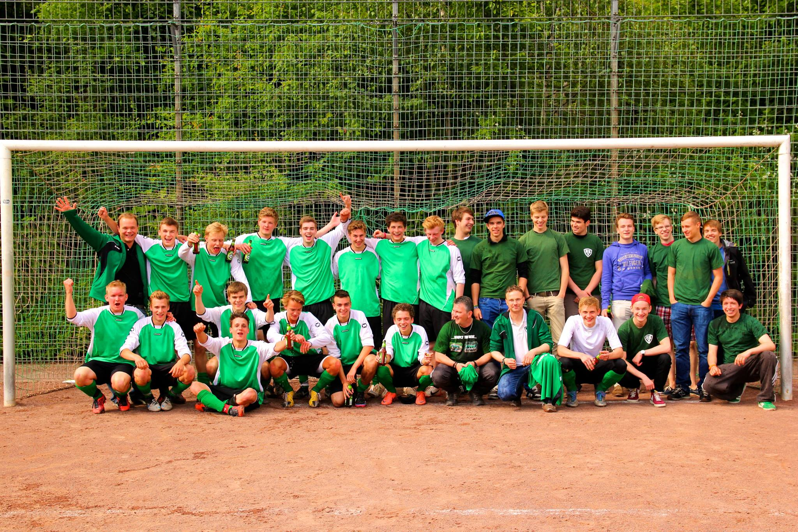
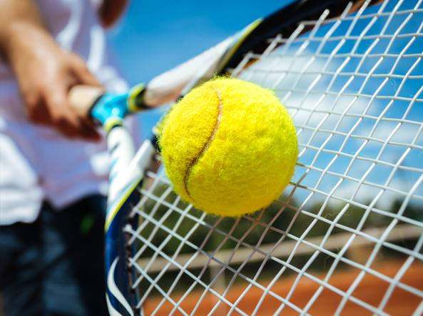
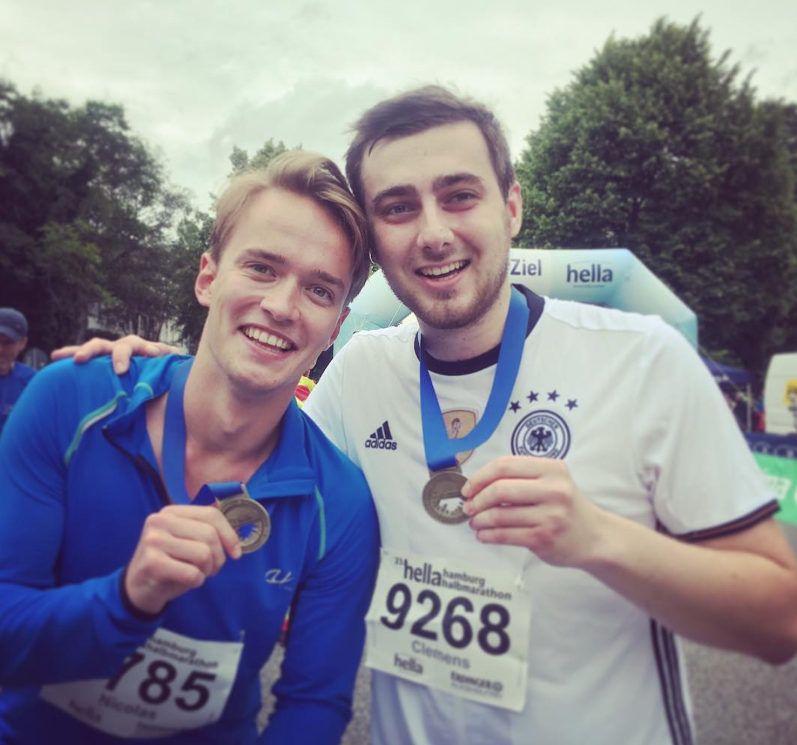

Nico Dee
Student @ Mountain University
After a year in the Swiss mountains, I've moved on to Pizza, Pasta, and Aperol. Throughout my life, sports has been the one constant - from from soccer to diving I have done lots of different sports. Below - a selection of my favorites:
|  | Soccer As a proper German, not playing soccer would be blasphemy. So from an early age on, I've been playing soccer. |
|  | Tennis As if soccer wasn't enough, I played Tennis about as much. |
|  | Running Then came the running that clears my head and challenges me every day. |
 |
Watersports ...would this be considered a sport? |
About this page
This page has been coded during the FullStack program @LeWagon . This was probably the most Espresso & Aperitivo rich time of my life.